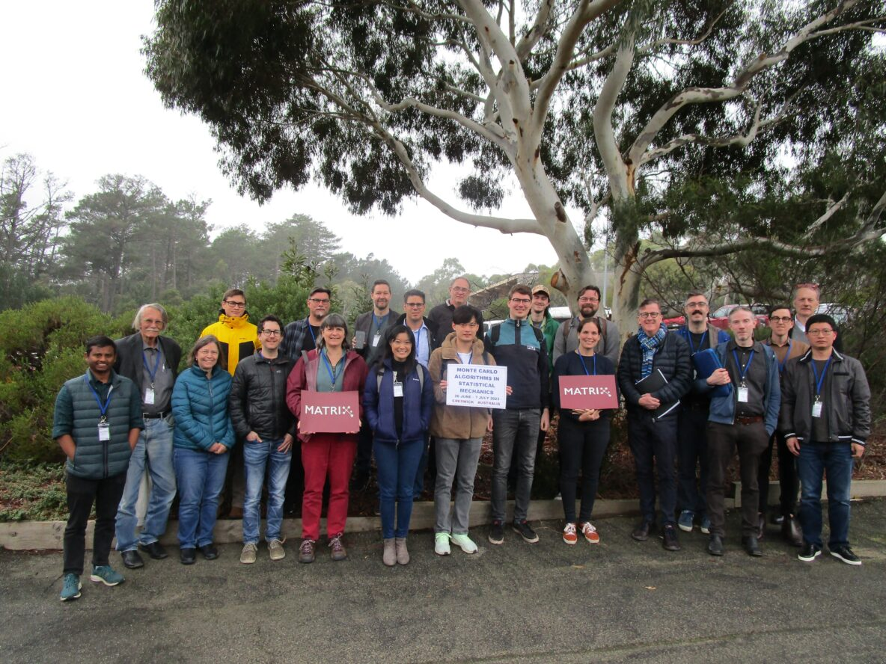

Academic Conferences, Meetings and Workshops
Conferences, Meetings and Workshops
Upcoming conferences
Guttmann 2025 - 80 and (still) counting: In honour of Tony Guttmann’s 80th birthday
Selection of past conferences as an invited speaker or organiser
MATRIX workshop
Monte Carlo Algorithms in Statistical Mechanics Creswick, Victoria, Australia, July 2023
Lattice walks at the Interface of Algebra, Analysis and Combinatorics,
Banff International Research Station for Mathematical Innovation and Discovery, Canada, September 2017
Means, methods and results in the statistical mechanics of polymeric systems II: In honour of Stuart Whittington’s 75th birthday,
Fields Institute for Research in Mathematical Sciences, Toronto, Canada, June, 2017
Guttmann 2015 – 70 and counting:
In honour of Tony Guttmann’s 70th birthday, Newcastle, December 2015 (organising committee)
Exactly Solved Models and Beyond : in honour of R J Baxter’s 75th birthday, Palm Cove, Australia, July 2015
CanaDAM meeting, Saskatoon, Canada. June 2015
SIAM
Conference on Discrete Mathematics SIAM DM14 , Minneapolis, USA, June 2014
CanaDAM meeting, Newfoundland, Canada. June 2013
International Workshop on Random Polymers at EURANDOM, Netherlands, January 2013
Means, methods and results in the statistical mechanics of polymeric systems: In honour of Stuart Whittington’s 70th birthday,
Fields Institute for Research in Mathematical Sciences, Toronto, Canada, June, 2012
Statistical Physics of Lattice
Polymers, a satellite conference of StatPhys24, Melbourne, July 2010 (organising committee)
American Mathematical Society (AMS) Sessional Meeting, University of British Columbia, Canada. October 2008
Combinatorics and Statistical Mechanics, Erwin Schroedinger International Institute for Mathematical Physics, University of Vienna, Austria. May 2008
Random Polymers (an international workshop) at EURANDOM, Netherlands. June 2007
Counting Complexity (an international workshop), Queensland. 2005 (organising committee)
International Workshop Statistical Mechanics of Polymer Models, Banff International Research Station for Mathematical Innovation and Discovery , Banff, Canada, May 2003
Formal Power Series and Algebraic Combinatorics (FPSAC), 2002 (organising committee)
Mathematical Physics of Polymers and Percolation workshop,
Fields Institute for Research in Mathematical Sciences, Toronto, Canada, 1998

© 2025 Aleksander Owczarek
Current update by Aleksander Owczarek
Updated by Nicholas Beaton
Original template design by Andreas Viklund